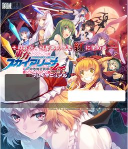

- Welcome to Touhou Wiki!
- Please register to edit. For assistance, check in with our Discord server or IRC channel.
Touhou Sky Arena -KURENAI-
| 東方スカイアリーナ -KURENAI- Touhou Sky Arena -KURENAI- | |
|---|---|
|
 | |
| Developer |
Area-ZERO (領域ZERO) |
| Publisher |
Area-ZERO (領域ZERO) |
| Released |
-KURENAI-: |
| Genre |
3D Arena Fighting Game |
| Gameplay |
Single-player story mode |
| Platforms | |
| Requirements |
Core2Duo 2GHz, GeForce 8800, 512MB VRAM |
| Official Site | |
Touhou Sky Arena -KURENAI- is a sequel to the popular fangame Touhou Sky Arena by Area-ZERO. Originally intended to be a series of patches, it was adapted into a full release and was released on May 27, 2012 at Reitaisai 9. A demo was released during Comiket 81.
Gameplay[edit]
KURENAI's gameplay is largely the same as its predecessor. Additions include eight new characters and the inclusion of a Spirit Orb system, which allows the player to equip three orbs to their character, modifying their abilities and stats. There are also new levels, including Bhava-Agra, Bamboo Forest of the Lost, an underground cave (not to be confused with Utsuho's stage in the original Touhou Sky Arena), and the Palanquin Ship.
Characters[edit]
-KURENAI- exclusive characters:
- Flandre Scarlet
- Suika Ibuki
- Fujiwara no Mokou
- Reisen Udongein Inaba
- Aya Shameimaru
- Sanae Kochiya
- Koishi Komeiji
- Tenshi Hinanawi
- Kogasa Tatara
- Nue Houjuu
Characters exclusive to the prequel, Touhou Sky Arena -HAYATE-, can be included by using the -MATSURI- game-linking patch.
Additional Information[edit]
-MATSURI- patch[edit]
Through the use of the -MATSURI- patch, owners of both the original Touhou Sky Arena and -KURENAI- can combine both games, allowing characters, stages, and music from both games to be used in either game (similar to how one could link Scarlet Weather Rhapsody to Hisoutensoku). Both games must be patched to version 1.51 before the -MATSURI- patch can be applied.
Patches[edit]
- -KURENAI- 1.54 patch
- -MATSURI- 1.54 patch (mirrors patch v1.51: part 1, part 2, part 3)
Touhou Sky Arena -MATSURI- Climax[edit]
Touhou Sky Arena -MATSURI- Climax is an enhanced port of Touhou Sky Arena -KURENAI- with the -MATSURI-patch for the PlayStation 4, which was released on May 20, 2016 on the PlayStation 4 in Japan. A localized version was revealed with a trailer on March 23, 2018 for Western audiences. The localized version was released digitally on July 30, 2018. The game features enhanced graphics due to the greater hardware of the console. PlayStation 4 and Vita avatars and themes were released alongside the game. A Nintendo Switch port was released in February 14, 2019.
-MATSURI- Climax exclusive characters: